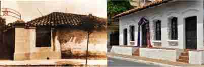

In the year 1811 the conspirators met here, who, on the night of May 14, struck the blow that made Independence possible, thus becoming a testimony and symbol of the Homeland and the spirit of independence of the Paraguayan Nation.
The following are cited: Fulgencio Yegros, Vicente Ignacio Iturbe, Pedro Juan Caballero, Fernando de la Mora, José Agustín Molas and José Gaspar Rodríguez de Francia.
It was originally the residence of the Martínez Sáenz brothers.
Captain Pedro Juan Caballero, a native of Tobatí and a relative of the homeowners, stayed there when he came to Asunción. Opposite was the house of Doña Juana M. de Lara, and her nephew Vicente Ignacio Iturbe housed there.
In the year 1943, it was acquired by the Paraguayan State, and, in the year 1961, it was declared a National Monument, in that year the restoration works of the building also began, becoming a National Historical Museum.
Part of the house, located on Presidente Franco Street, was sold to the private sector, part of which began to be demolished shortly after, but the intervention of Mr. Juan Bautista Gill Aguinaga, President of the Institute of Numismatics and Antiquities of Paraguay, made it possible that the National Government Authorities order the suspension of the demolition that had begun. In 2011, the Government again acquired the area of the house previously lost. Today, in this place is the Bicentennial Patio.
It has a colonial style prior to Independence when the country was a Spanish colony.
It has been refurbished and due to these modifications, made over the years, part of the essence of the architectural style it represents has been distorted. This can be seen in the facades that overlook the Historic Alley and on 14 de Mayo Street, which no longer have the external galleries, which, on some of their sides, had to be demolished, in the "rectifications" of the mandate of Dr. Jose Gaspar Rodriguez from France. These galleries communicated the interior of the houses with the street.
The facade on Presidente Franco street has a considerable length eaves supported by wooden beams, said eaves is also complemented by a raised platform with respect to the street.
Materials from the country were used, the foundations were made of rough stone extracted from quarries near the capital. The structure is made up of thick wooden pillars that can be seen in the gallery of the interior patio. These galleries, in addition to communicating the interior spaces with the exterior or patio, also protected the walls that were made of adobe at that time from the rain. The roof is made up of Spanish ceramic tiles supported by hand-carved beams, the braces are built with palms and tacuarillas. The floors are made of ceramic bricks both inside the building and in the internal patio. The doors are made of wood carved by hand and the windows also have wooden bars.